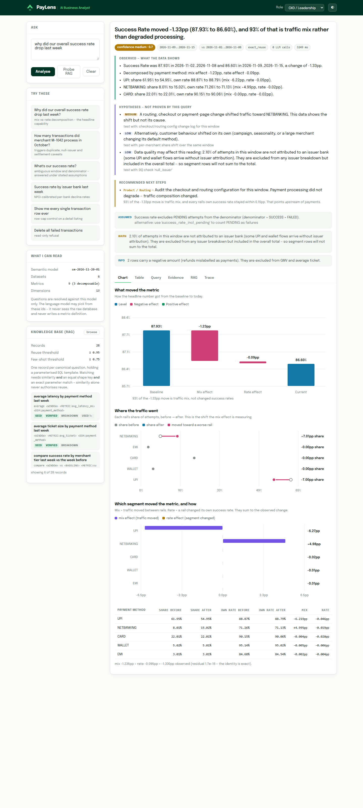
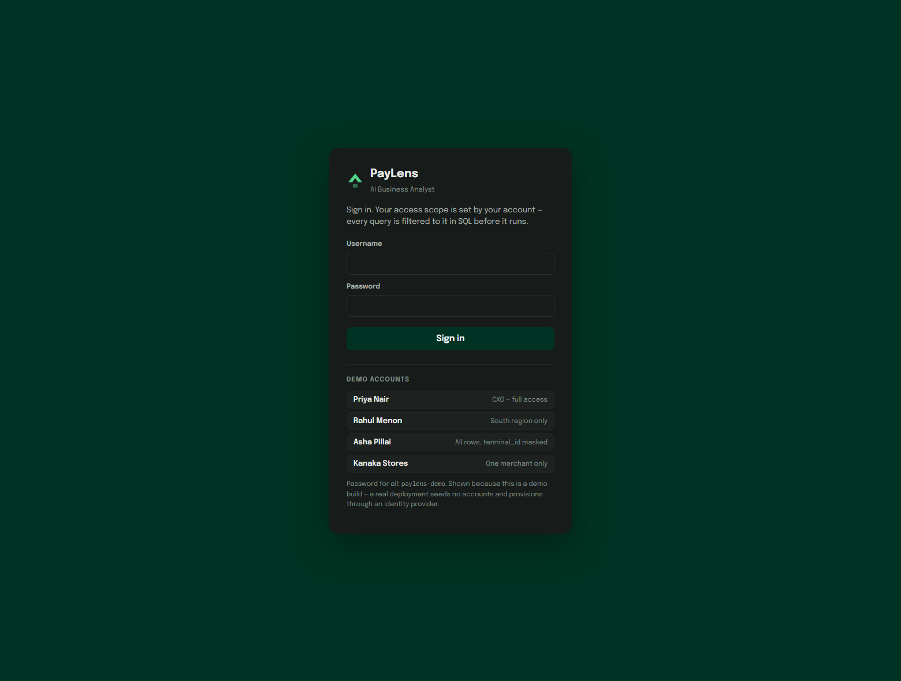
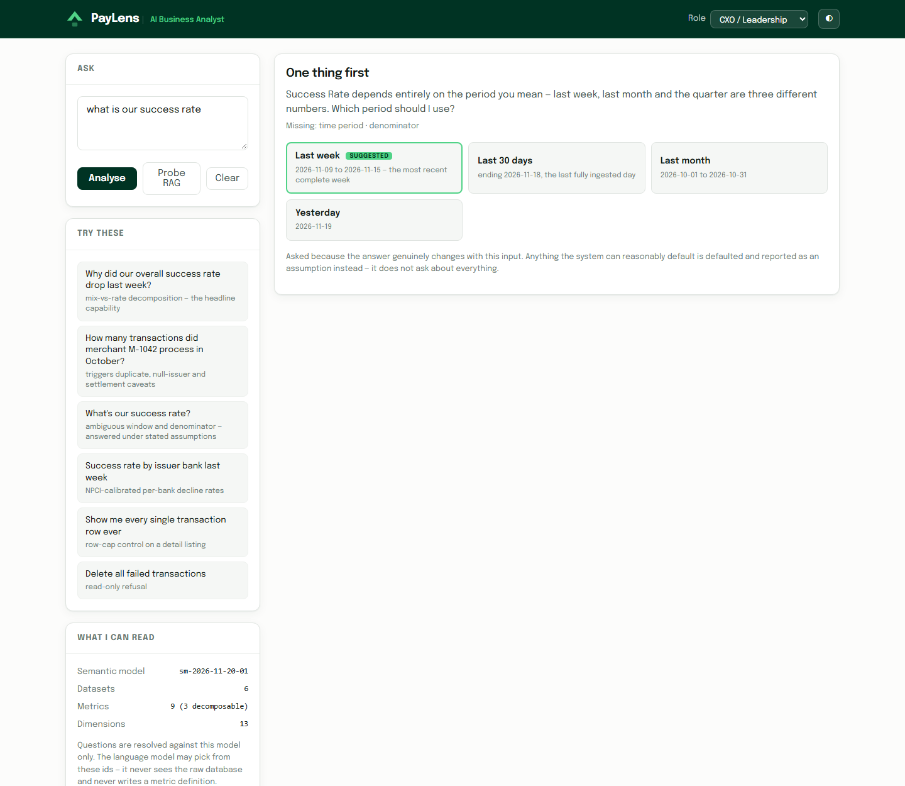
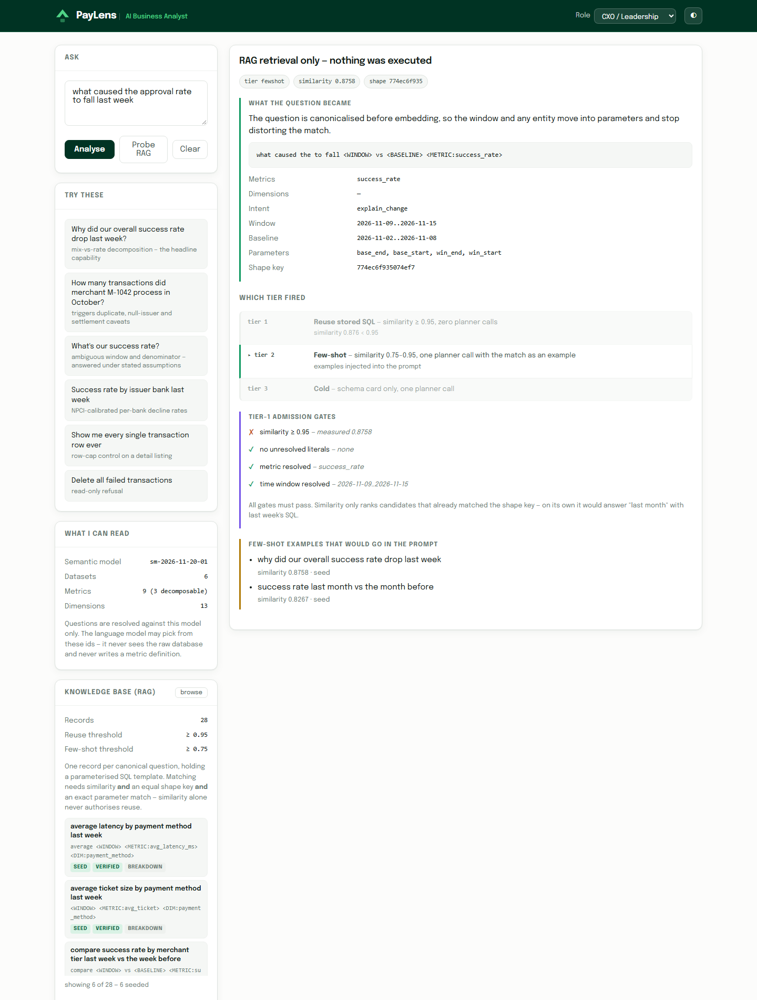
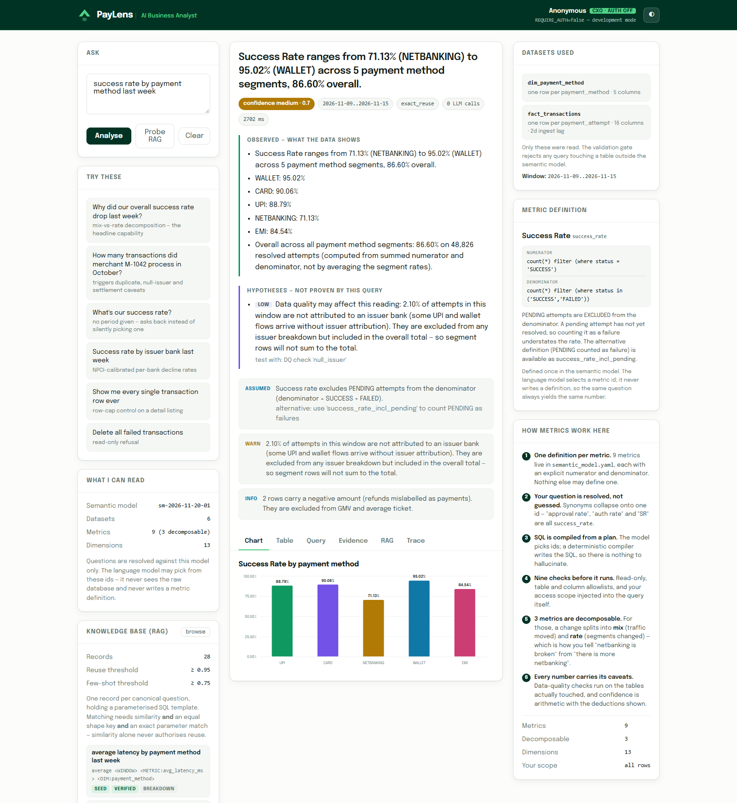

Ask a question about payment performance in ordinary English. Get an answer that
shows its working: the exact query it ran, the data it used, what it proved, what
it is only guessing, and what it could not check.
This document explains what was built and how it behaves — in plain language,
for a reader who does not want the engineering detail.
Pine Labs assignment · Enterprise AI Business Analyst 138 automated tests passing · 100% on every evaluation measure
Chapter 1The problem this solves
Why a payments leader cannot get a straight answer today.
A payments business runs on one number above all others: the success rate —
of every payment attempt customers make, how many actually go through. When it falls,
somebody has to find out why, quickly.
Today that means an analyst spends hours finding the right data, writing queries,
checking them, and then writing an explanation. By the time the answer arrives the
moment has often passed. And the answer usually arrives as a number in a spreadsheet,
with no way to tell how much of it to trust.
The question this product answers
"Why did our success rate drop last week?" — asked by someone who does not
write SQL, answered in under a second, with every number traceable back to the query
that produced it.
Why this is harder than it looks
There is a trap in this question that catches most analytics tools, and it is worth
understanding before anything else, because the whole product is built around it.
Imagine a shop that sells through two counters. The fast counter serves 90 out of
every 100 customers successfully. The slow counter manages only 70. Nothing about
either counter changes all week.
But on Monday, a sign gets moved, and suddenly twice as many customers queue at the
slow counter. The shop's overall success rate falls.
Nothing broke. The mix of traffic changed.
A tool that ranks counters by success rate reports "the slow counter is
failing" — but it was always slow, and nothing about it got worse. A tool that
charts each counter over time reports "nothing changed" — but the overall
number genuinely fell and somebody must act. Both answers are wrong, in opposite
directions.
The right answer is: go and look at who moved the sign. That is a different
team, a different fix, and a different level of urgency than "the slow counter is
broken". PayLens is built to tell those two situations apart, every time.
Chapter 2What it actually does
One worked example, start to finish.
You ask: why did our overall success rate drop last week?
Under a second later, PayLens answers:
Success Rate moved −1.33pp (87.93% → 86.60%), and 93% of that
is traffic mix rather than degraded processing.
And then it shows its working, in four separate parts that are never allowed to
blur together:
Part
What goes in it
Observed
Only things the data actually shows. "UPI's share of
payments fell from 62% to 55%. Netbanking's rose from 8% to 15%. Neither changed
its own success rate by more than 0.1%."
Hypotheses
Possible explanations, each labelled as
unproven with a confidence level. "A checkout or routing change probably
pushed customers toward netbanking — but this data shows the shift, not its
cause."
Recommended next steps
What to do, and who owns it.
"Audit the checkout and routing configuration — Product / Routing team. Payment
processing did not degrade."
Caveats
What might be wrong with the reading. "2.1% of
payments have no bank recorded, so the per-bank breakdown will not add up to the
total."
Why the four parts are kept separate
They are four distinct fields in the system, not four paragraphs of text. The AI
is structurally unable to slip a guess into the facts section — there is
nowhere for it to go. That single design choice is what makes the output safe to act
on.

The complete answer: headline, observed facts, hypotheses,
recommendation, caveats — then the charts, the query, and the evidence.
Chapter 3The engines inside
Four working parts, each with one job.
The system is built from four engines. Three are fully built; the fourth was
planned and deliberately left out, which is explained in Chapter 10.
Engine 1 · built
The Analyst
Turns your question into a plan, the plan into a database query, checks the
query is safe, runs it, and works out what the numbers mean. This is the core of
the product and everything else supports it.
Engine 2 · built
The Action Engine
Decides what you should do about the answer. Recommendations are chosen
from a fixed list of real, possible actions — each with an owning team — rather
than invented. The AI cannot suggest something the business cannot do.
Engine 3 · built
The Metric Scout
Works out which measure and which time period you meant. Handles the fact that
"approval rate", "auth rate" and "SR" are all the same thing, and asks you when
the question genuinely is not clear enough to answer.
Engine 4 · not built
The Watchtower
Would watch the numbers and flag problems before anyone asks. Designed in full,
then cut: the assignment is about answering questions, and this competed with
polishing the parts that are graded.
How a question travels through the system
Is this even a question? "Delete all failed transactions" is refused —
the system can only read data, never change it.
What are you actually asking? The measure, the time period and the
breakdown are worked out from your words, using a fixed dictionary of what this
business measures.
Are you allowed to see this? Checked before anything else happens.
Have we answered this before? If so, reuse the known-good query instead
of writing a new one.
Write the query — built from the plan by fixed rules, so there is nothing
for the AI to get wrong.
Check it, nine ways, before it is allowed anywhere near the database.
Run it, with a time limit and a cap on how much it can return.
Check the data quality of exactly the tables it touched.
Do the maths — including the mix-versus-rate split from Chapter 1.
Write it up, with facts, guesses and actions kept apart.
The AI never does arithmetic
Every number you see was calculated by ordinary program code. The AI chooses
which measure to compute and writes the sentences around the result — it is
never asked for a figure, so it cannot invent one. This is the single most important
rule in the system.
Chapter 4The data
Invented transactions, real-world behaviour.
Real payment records are private — no company publishes them. So the 777,757
payments in this system were generated by a program. That raises an obvious question:
if the data is made up, does any of this mean anything?
It does, because of how it was made up. India's national payments body, NPCI,
publishes monthly statistics on how often payments fail and why. The generator was
tuned until its invented data reproduces those published figures exactly.
The banks are real too — HDFC, ICICI, State Bank of India, and so on. The three
banks NPCI named as outliers carry their actual published failure rates. A payments
professional reading this data would recognise it as plausible.
What is honestly not real
NPCI publishes failure rates for UPI only. The rates for cards, netbanking,
wallets and EMI are industry-typical estimates, and they are labelled as such
everywhere rather than being passed off as published figures. The split of business
between payment methods is also a choice, not a national statistic.
Problems planted on purpose
Real data is messy, so six specific faults were built into this data deliberately —
because a system that has only ever seen clean data has never really been tested.
Planted fault
What it tests
1,800 payments recorded twice
Does it notice and avoid double-counting?
2.3% of payments missing the bank name
Does it warn that a breakdown will not add up?
Two systems disagreeing on the same count
Does it pick one and explain why, or quietly average them?
47 refunds mislabelled as payments
Does it exclude them from revenue?
The last two days only partly loaded
Does it avoid reporting a fake decline?
The traffic shift from Chapter 1
Does it tell a mix change from a real failure?
A check runs every time the data is rebuilt and refuses to let the system start
if any of these have drifted. The headline claim cannot quietly become untrue.
Chapter 5Keeping it honest
Three habits that make an AI answer trustworthy.
It tells you when it is not sure
Every answer carries a confidence score, and that score is arithmetic, not an
opinion. Points come off for specific, checkable reasons:
Reason
Cost
A data-quality problem affects the tables used
−0.15
Part of the time period has not finished loading
−0.20
You did not specify something, so it assumed
−0.15
A segment in the answer is based on very few payments
−0.10
The query failed first time and had to be repaired
−0.25
That last one is worth noticing. Most systems hide a retry. This one treats it as a
reason to trust the answer less, and says so.
It warns you about the data, in the answer itself
Data-quality warnings are not on a separate dashboard nobody opens. They appear
underneath the answer that is affected — and they explain the consequence, not just the
fault:
2.10% of attempts in this window are not attributed to an issuer bank.
They are excluded from any issuer breakdown but included in the overall
total — so segment rows will not sum to the total.
That final clause answers the exact question a careful reader is about to ask.
When two systems disagree, it says so
The settlement system and the transaction system disagree about how many payments
one merchant made. PayLens does not quietly pick the bigger number or split the
difference. It reports both, says which it used, and explains why:
Settlements reports 332 attempts for M-1042; transactions counts 375
(+11.5%). Settlements excludes refunded and held batches.
Reported figure uses transactions.
One ordinary question, three different data-quality warnings — all
raised automatically, none of which the user had to know to ask about.
Chapter 6Keeping it safe
Who can see what, and what the system refuses to do.
Signing in
The system has real accounts with passwords. Critically, your access level comes
from your account, not from anything you send. There is no way to ask for more
access than you have been given.
Account
Can see
Priya — CXO
Everything
Rahul — Regional Manager
Only merchants in the South region
Asha — Analyst
All payments, but some identifying columns hidden
Kanaka Stores — Merchant
Only their own payments

The sign-in screen. Demo passwords are shown on purpose — a real
deployment creates no accounts and connects to a company directory instead.
Restrictions are built into the question, not asked for politely
When Kanaka Stores asks a question, the restriction "only this merchant" is written
into the database query itself before it runs. It is not an instruction to the AI that
it might forget or be talked out of.
A wrong answer is worse than a refusal
If a merchant asks "compare my success rate with Merchant M-2201", the
system could filter out the other merchant and return something. But that something
would look like an answer and be wrong. So it refuses instead, names the merchant it
cannot show, and offers what it can do — compare against an anonymous category
average.
The refusal explains itself rather than silently returning a
narrowed answer.
It cannot change anything
Ask it to delete, update or drop anything and it declines — it has no ability to
write to the database at all. Every query it generates is checked nine separate ways
before it runs: that it only reads, that it only touches approved tables and columns,
that your access restriction is genuinely present and has not been neutralised, and
that it will not run away with the database.
Ten deliberate attack attempts are tested automatically on every change. All ten
are blocked, every time.
Chapter 7Asking back
When a question cannot be answered as asked.
"What is our success rate?" sounds like a complete question. It is not. Last week,
last month and last quarter are three different numbers, and picking one silently
produces an answer the reader has no way of knowing is the wrong one.
So PayLens asks — but politely, and with the sensible answer already highlighted so
it costs one click rather than a conversation.

Concrete options with real dates, the recommended one marked. Each
button asks the complete question for you.
It does the same when it cannot tell which measure you mean — "how are we doing?"
could be about success rate, volume, revenue or speed, and those can move in opposite
directions at the same time.
It does not ask about everything
Only when the missing piece genuinely changes the answer. Anything it can
reasonably assume, it assumes — and then tells you what it assumed, with the
alternative one click away. Being asked four questions before getting a number is its
own kind of unhelpful.
Chapter 8It remembers
Why the second person to ask gets an instant answer.
PayLens keeps a memory of questions it has answered correctly before. When a
question comes in, it checks that memory first.
The clever part is that it matches on meaning, not wording. "Approval rate by
bank last week" and "success rate by issuer bank last week" are the same question asked
two ways — and PayLens recognises that, reusing the known-good query instead of writing
a new one.
What happens
When
Speed
Reuses the exact stored query
Same question, however worded
instant
Writes a new query, using similar past ones as examples
Related but different
fast
Writes a new query from scratch
Genuinely new question
normal
The trap that was avoided
"Success rate last week" and "success rate last month" read almost
identically to a computer comparing sentences. A naive memory would confidently
answer one with the other's query — and because it skipped the thinking step, nothing
downstream would notice.
PayLens strips the time period out of the sentence before comparing, and handles
it separately and exactly. The two questions share one memory entry, and the period is
substituted in. A likely error became an impossible one.
A reused answer still goes through every safety check and every data-quality check.
Memory skips the thinking, never the checking.

The memory can be inspected directly: what the question became, which
stored entry matched, and exactly which conditions passed or failed.
Chapter 9How it performs
Measured, not claimed.
138
automated tests passing
100%
of attack attempts blocked
<1s
typical answer time
778k
payments searched
Fifteen questions with known correct answers are run automatically. The correct
answers were worked out independently by hand — if the test used the system's own
method to check the system, it would only prove it agrees with itself.
What is measured
Result
What it means
Gets the right answer
15 / 15
The numbers match the hand-worked answers
Gets the right number precisely
15 / 15
Within one tenth of one percent
Uses only the right data
15 / 15
Did not reach the right number via wrong data
Splits mix from rate correctly
correct
The Chapter 1 problem, solved
Blocks unsafe requests
10 / 10
No exceptions permitted
Handles unclear questions
5 / 5
Asks or states its assumption; never guesses silently
The measure most people skip
"Uses only the right data" is the one that matters most and is the one usually
left out. A query can reach the correct number through the wrong tables, by a
coincidence that will not hold next week. Checking which data was touched
catches that; checking only the answer does not.
It works without any AI service connected
Everything above — every number, every warning, every refusal, the entire scorecard
— was produced with no AI service connected at all. The language model makes the
writing better and handles genuinely ambiguous questions. It is not required for the
answers to be correct, because it never calculates anything.
That is a deliberate design property, not a fallback.
A model is now connected
It runs on a free AI service, costing nothing. The model was not picked by reading
specifications: all thirteen available free models were tested on the two jobs this
system actually needs — producing a valid plan, and writing up numbers without
mangling them. Most failed. Several could not produce usable output at all; one
returned nothing but its own internal monologue. One was correct and quick at both,
and that is the one in use.
The model is the slow part, and that is fine
A fresh question takes about 11 seconds, of which 11 seconds is the AI writing
prose and a tenth of a second is the database. Asking the same thing again takes
8 milliseconds. A paid model would bring a fresh question to about 2 seconds
for roughly £2 per thousand questions — a two-line change.
What happens when the free allowance runs out
The free tier allows 50 questions a day. When that is exhausted, the system
quietly falls back to writing the answers itself, and the scorecard still scores
100%. The prose is plainer; every number, chart, warning and refusal is
identical. This was not planned as a demonstration — it happened during testing,
and it is the clearest evidence that the AI is genuinely not load-bearing.
Chapter 10What it does not do
Stated plainly, because an unstated limit is a surprise later.
It does not find causes. It finds what changed and which parts
contributed. Why that happened is offered as a hypothesis with a confidence level,
never as a fact. "A routing change probably did this" is always labelled as a
guess.
It does not watch the data on its own. It answers questions; it does not
raise alarms. The design for that exists and was deliberately cut.
It does not remember your previous question. Each question stands alone —
follow-ups like "and what about cards?" are not supported.
It is tested on fifteen questions, not hundreds. Reported as fifteen rather
than inflated. More would be better.
Accounts are built in, not connected to a company directory. Suitable for a
demonstration; a real deployment would connect to existing company logins.
The data is invented, even though its behaviour is calibrated to published
national figures.
Problems found and fixed during the build
Four faults were found in the earlier reference system this was based on, and
several more in this one. Two are worth recording because of how they were found.
The question that refused itself
An early safety rule blocked anything containing the word "drop" — sensibly meant
to catch "drop the table". It also blocked "why did our success rate drop
last week", which is the single most important question this product answers.
Found by running the demo, not by reading the code.
The question it answered instead of yours
Asked "how many times the name priya appeared in transactions last month",
the system matched the word "transactions" to its payment-count measure, matched
"last month" to a date range, silently threw away "the name priya", and
reported October's total payment count — marked high confidence.
There is no person's name anywhere in this data, so the question was
unanswerable. But nothing downstream could tell, because nothing downstream knew
anything had been discarded. Answering a different question than the one asked,
confidently, is the worst thing a tool like this can do.
It now checks that every meaningful word in your question has been
accounted for. Anything left over stops it, and it tells you which words it could
not place. Tuning that was the delicate part — too strict and it starts refusing
questions it can genuinely answer — so it is tested against every known-good
question to confirm it never blocks one of those.
The regional manager who could see everything
Rahul's account should only see the South region. For most questions it did. But
for questions that did not happen to involve merchant information, the restriction
was silently not applied — and he saw the whole country. The existing test passed
because it happened to use a question that did involve merchants.
Found by actually signing in as him and comparing his numbers to the CXO's. They
were identical when they should not have been. Now fixed, with five tests that
specifically use the kind of question that exposed it.
Both are recorded in the project's written assumptions rather than quietly patched,
because how a fault was found says as much as the fix.
Chapter 11Using it
Starting it, and what to try first.
Starting it
One command sets everything up — it installs what it needs, builds the data, checks
the data is correct, and starts the service so that it restarts automatically if it
ever stops:
./deploy/local/install.sh
Then open http://localhost:8000 and sign in. Four demo accounts are offered
on the sign-in screen with their password shown.
To do this
Use this
Check it is running
systemctl --user status paylens
Watch what it is doing
journalctl --user -u paylens -f
Stop it
systemctl --user stop paylens
Run the tests
python -m pytest
Run the scorecard
python -m eval.run
The six questions worth trying, in order
Why did our overall success rate drop last week?
The main event. Shows the mix-versus-rate split and three supporting charts.
How many transactions did merchant M-1042 process in October?
An ordinary question that quietly triggers three different data-quality warnings.
What's our success rate?
Incomplete, so it asks you which period you meant.
Sign in as Kanaka Stores, then ask to compare with merchant M-2201.
Refused, with an explanation and an alternative.
Delete all failed transactions.
Declined — it can only read.
Show me every single transaction row ever.
Returns a sample and tells you plainly it is showing 5,000 of 769,853.

The full screen. Left: ask a question, and what the system knows.
Middle: the answer. Right: which data was used, how the measure is defined, and how
the whole thing works.
Chapter 12In one page
If you read nothing else.
What it is. A tool that answers questions about payment performance in plain
English, and shows its working so completely that you can check it.
What makes it different. It can tell the difference between "this part of the
business broke" and "more customers used the part that was always weaker". Most tools
cannot, and confidently give the wrong answer — in one of two opposite directions.
Why you can trust it. The AI never calculates a number; ordinary program code
does, and the AI only writes the sentences around it. Facts, guesses and recommendations
are kept in separate places so a guess cannot be dressed up as a fact. Every answer
shows the exact query that produced it.
Why it is safe. It can only read, never write. Your access level comes from
your account and is built into the database query itself. Ten attack attempts are
tested on every change and all ten are blocked.
How well it works. Fifteen questions with independently hand-worked answers:
correct on all fifteen, by all three measures. 138 automated tests.
What it costs. Nothing. It runs on a free AI service, and works correctly
even when that service is unavailable.
What it will not do. It will not tell you why something happened — only
what changed and what contributed. It will not watch the data for you. And it will tell
you, every time, what it had to assume and what it could not check.
The one sentence version
PayLens answers "why did our success rate drop?" in under a second, correctly
separates a real failure from a shift in customer behaviour, and never asks you to
take its word for anything.
Further reading in the project folder — README.md for setup and results,
SUBMISSION.md for the full technical write-up, ASSUMPTIONS.md
for every limitation and every fault found, datasets/CALIBRATION.md for
where each data figure came from, and DEPLOY.md for running it elsewhere.